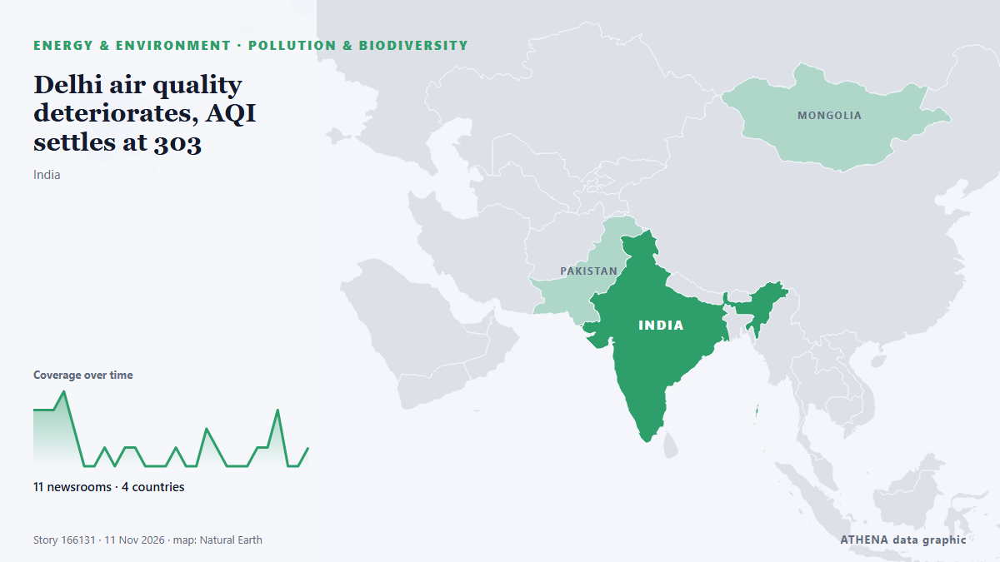

Delhi air quality deteriorates, AQI settles at 303

New Delhi: Delhi's air quality worsened to 'very poor' on Wednesday, with the AQI settling at 303, the Central Pollution Control Board (CPCB) data showed. from Deccan Herald
Reported independently by 11 outlets in 4 countries since 9 Nov, first by The Hindu; coverage is fading. ATHENA rates the risk moderate (3.4/10), driven mainly by the severity of the harm described and the quality of the evidence. Confidence is 86% (high), with 11 independent outlets corroborating it and an average source reliability of 69%. Outlets by country: India (25), Pakistan (1), Canada (1). Coverage: 9 Nov to 11 Nov, 55 hours.
Why it matters: Energy and resource developments affect fuel and power prices, supply security and climate commitments.
What changed: 9 new reports from 8 outlets in the 24 hours to 11 Nov.
First reported as: Delhi air pollution: AAP slams Delhi govt for alleged air quality data ‘manipulation’
How to read this page
- What you are reading
- 11 outlets in 4 countries reported this event. The reports below are listed in the order they appeared; each headline opens the original article. ATHENA writes none of the reports.
- Our reading
- For the record — The reports describe a completed, domestic, commercial or personal matter. We list it so you can see who reported it and when. We are not tracking a risk of wider conflict here.
- How much evidence
- Limited Treat this page as an early report.
After repeats, off-topic items and stale reports are removed, 10 of the 28 listed reports are counted; 79% of the headlines match the event.
- What this does not mean
- ATHENA measures how an event is reported, not whether it is true. This is not a forecast, a judgement on who is right, or advice.
- What would change it
- Reports from other independent outlets showing a different development, or a firm confirmation or denial from an official source.
Reading R2 · refreshed with every update of this page. ATHENA has not yet published a track record for these readings; when it does, it will be linked here.
At a glance
Selected, scored and written by ATHENA's published methodology. No editor intervenes in individual events. How this is produced ›
| 09 Nov 05:01 UTC | 3 |
|---|---|
| 09 Nov 07:01 UTC | 3 |
| 09 Nov 09:01 UTC | 3 |
| 09 Nov 11:01 UTC | 4 |
| 09 Nov 13:01 UTC | 2 |
| 09 Nov 15:01 UTC | 0 |
| 09 Nov 17:01 UTC | 0 |
| 09 Nov 19:01 UTC | 1 |
| 09 Nov 21:01 UTC | 0 |
| 09 Nov 23:01 UTC | 1 |
| 10 Nov 01:01 UTC | 1 |
| 10 Nov 03:01 UTC | 0 |
| 10 Nov 05:01 UTC | 0 |
| 10 Nov 07:01 UTC | 0 |
| 10 Nov 09:01 UTC | 1 |
| 10 Nov 11:01 UTC | 0 |
| 10 Nov 13:01 UTC | 0 |
| 10 Nov 15:01 UTC | 2 |
| 10 Nov 17:01 UTC | 1 |
| 10 Nov 19:01 UTC | 0 |
| 10 Nov 21:01 UTC | 0 |
| 10 Nov 23:01 UTC | 0 |
| 11 Nov 01:01 UTC | 1 |
| 11 Nov 03:01 UTC | 1 |
| 11 Nov 05:01 UTC | 3 |
| 11 Nov 07:01 UTC | 0 |
| 11 Nov 09:01 UTC | 0 |
| 11 Nov 11:01 UTC | 1 |
| 09 Nov 05:22 UTC | 2.7 |
|---|---|
| 09 Nov 06:32 UTC | 1.8 |
| 09 Nov 07:44 UTC | 2.3 |
| 09 Nov 12:49 UTC | 3.1 |
| 11 Nov 11:51 UTC | 3.4 |
Why these numbers
Importance
Risk
Confidence
The reporting — who reported it, and when
headline as published · opens the original- The Hindu · IndiaDelhi AQI row: AAP alleges data fraud, BJP fires back over Punjab stubble ‘conspiracy’
- Indian Express · IndiaDelhi’s AQI is 370, but some platforms show 1,000: Why do readings differ?
- Livemint · IndiaWhat was Delhi air quality on Deepavali night?Even reading yesterday’s Diwali AQI will discomfort your lungs; check data
- Dawn · PakistanLahore remains world’s most polluted major city as AQI crosses 600
- Hindustan Times · India‘Delhi AQI crossed 3,000’: AAP's Saurabh Bharadwaj alleges ‘AQI data fraud’ by government
- Indian Express · IndiaAs Delhi’s air turned toxic on Diwali, 45 monitoring stations had missing readings
- Indian Express · IndiaDelhi pollution: What breathing toxic air for just 7 days can do to your lungs and heart
- Indian Express · IndiaAQI above 400: How toxic air can affect your lungs, heart and brain
- The Hindu · IndiaDelhi AQI: What is PM2.5 and the row over air pollution data post Deepavali?
- CBC News · CanadaNew Delhi wakes to toxic smog as Diwali firecrackers add to seasonal pollution crisis
- The Hindu · IndiaChennai’s air quality deteriorates to ‘poor’ the morning after Deepavali
- Deccan Herald · IndiaQuestions over Delhi AQI data as several monitoring stations go offline on Diwali night
- The Hindu · IndiaAt peak of air pollution on Deepavali, data goes missing at several government monitoring stations in Delhi
- Deccan Herald · IndiaDelhi Diwali aftermath: What 'severe' AQI means for your health?
- Scroll.in · IndiaDelhi air pollution: Several monitoring stations did not report AQI readings on Diwali night
- Times of India · IndiaDelhi pollution on Diwali rockets to worst in 5 years
- Hindustan Times · IndiaDelhi pollution monitors went dark as AQI surged on Diwali
- NDTV · IndiaChennai Air Quality Turns 'Very Poor' As AQI Crosses 300 On Diwali
- Times of India · India373 or 1,747? What was Delhi's actual AQI on Diwali and why did readings differ
- Times of India · IndiaCPCB explains why official AQI is capped at 500 but pvt apps show higher readings
- Deccan Herald · IndiaAQI differences with private apps due to different methodology, not data under-reporting: CPCB
- NDTV · IndiaWhy Is Max AQI Capped At 500? Pollution Board Attempts To Clear The Air
- Indian Express · IndiaAmid concerns over data gaps, higher AQI on private platforms, CPCB clarifies
- Livemint · IndiaAQI capped at 500? CPCB explains why official monitors missed Delhi’s peak Diwali smog
- Deccan Herald · IndiaDelhi air quality deteriorates, AQI settles at 303
- The Hindu · IndiaDelhi air quality deteriorates, AQI settles at 303
- DW English · GermanyIndia: CPCB addresses stark Delhi pollution data gap on Diwali night
- Scroll.in · IndiaDelhi pollution: CPCB says extreme PM 2.5 readings not part of AQI methodology amid Diwali data gaps